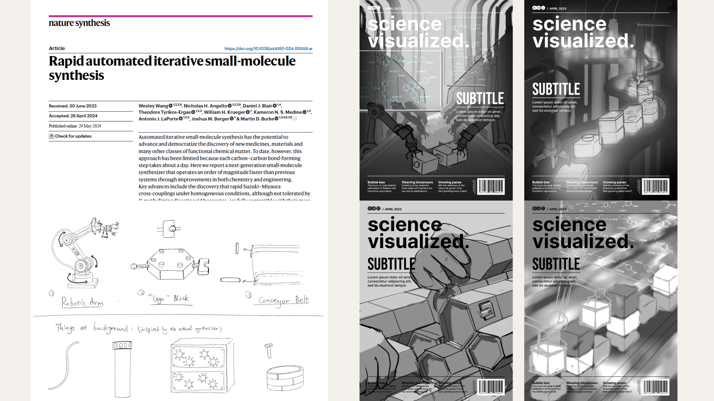
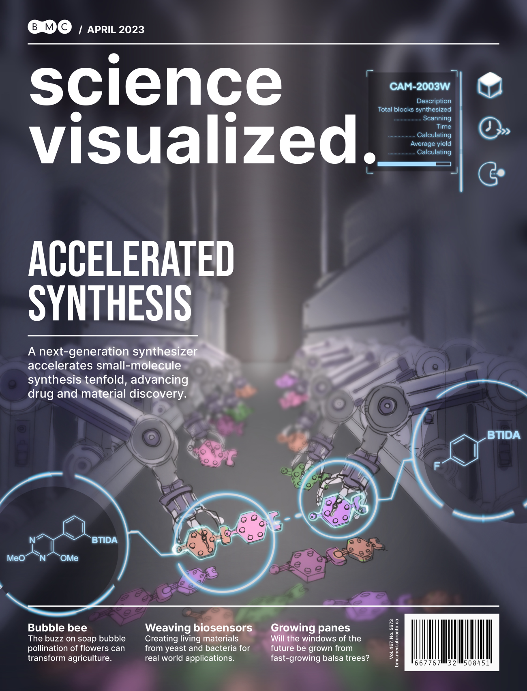
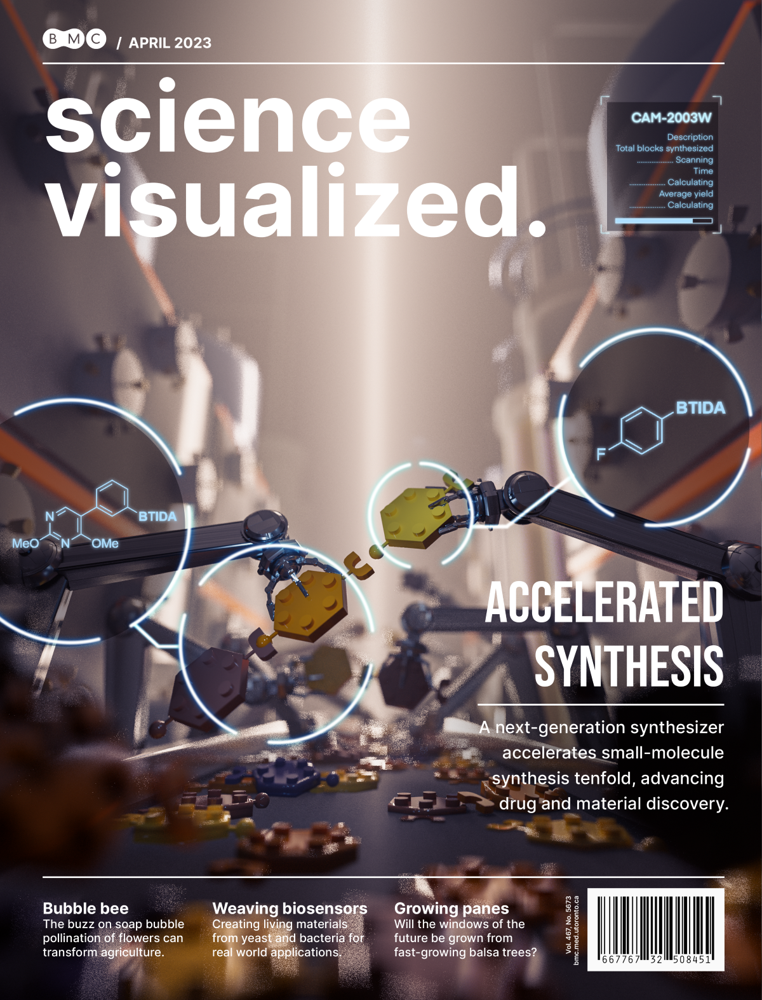
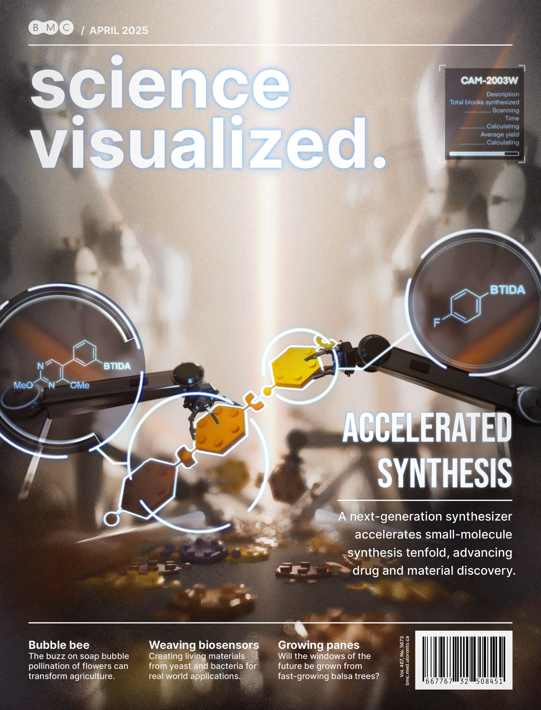

← Back to Gallery
This mock journal cover is designed to translate a cutting-edge small-molecule synthesis study into a clear visual using metaphor.
The featured research describes a next-generation automated synthesizer that uses stable TIDA boronates and pinacol ester intermediates to accelerate synthesis cycles by an order of magnitude—an advance that promises to reshape how we create medicines and organic materials.

At the heart of the design lies a LEGO metaphor: each small molecule becomes a hexagonal LEGO tile, representing benzene rings, with color-coded attachments representing different functional groups. I began with quick thumbnail sketches to explore composition.

Then I refined my favorite concept into a comprehensive sketch, adding an overlay and labels to ensure the metaphor reads instantly.

Modeling of robotic arms, LEGO molecules, as well as "factories" at the background were done in Autodesk Maya. Th joints of robotic arms were carefully adjusted for different poses to add variations to the scene. Then for rendering, I added lighting, material shaders, and a subtle depth-of-field blur that draws the eye to the arms in the front.

Finally, I imported the image to Photoshop for colour and curve adjustments and graphic overlays, yielding a polished cover.
